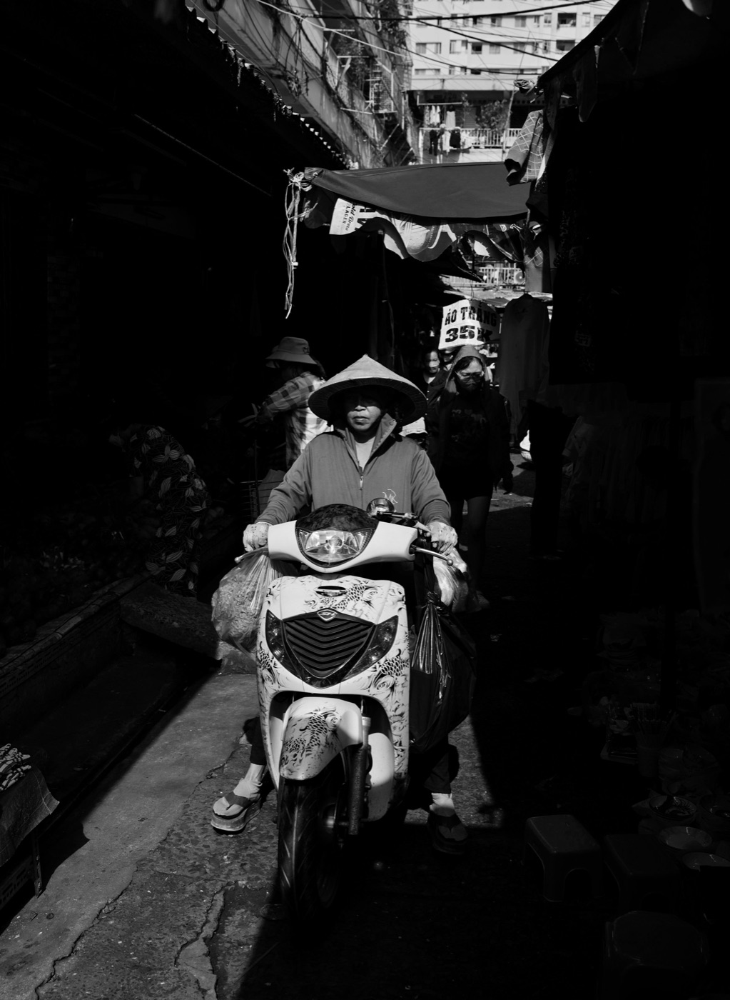

Что делать, если байк упал

Даже падение на парковке может согнуть ручку, повредить зеркало или вызвать утечку. Не спеши сразу запускать двигатель. Сначала убедись, что люди в безопасности, убери риск столкновения и спокойно осмотри технику.
Сначала обезопась место
Выключи зажигание и отойди от движущегося транспорта. Если есть травма, головокружение или сильная боль, не поднимай байк самостоятельно и попроси помощи. На проезжей части важнее обозначить место и вызвать поддержку, чем немедленно спасать пластик.
Как поднимать без рывка
Убедись, что двигатель выключен и поверхность не скользкая. Убери подножку со стороны, на которую будешь ставить байк. Присядь, держи спину ровнее, возьмись за устойчивые части рамы или руля и поднимай ногами плавно. Не тяни за зеркало, пластик, багажник или горячий выхлоп. Если байк тяжёлый — попроси второго человека.
Быстрая проверка
- нет ли запаха топлива, масла или свежей жидкости под байком;
- свободно ли вращаются колёса;
- руль поворачивается без заедания и выглядит ровно;
- тормозные ручки не сломаны и имеют привычный ход;
- газ возвращается самостоятельно;
- зеркала, свет, поворотники и стоп-сигнал работают;
- пластик, провод или номер не касаются колеса.
Когда нельзя ехать дальше
Не продолжай движение при утечке топлива, мягком тормозе, перекошенном руле, повреждении колеса или шины, зажатом газе, трещине несущей детали, запахе горелого и странном звуке двигателя. Байк лучше доставить в сервис, а не проверять проблему на скорости.
Если повреждения кажутся косметическими
Запусти двигатель только после осмотра и стой рядом с выключателем. Послушай работу на месте. Затем на закрытой площадке проверь тормоза на минимальной скорости. Даже если байк едет нормально, покажи его мастеру: скрытое смещение крепления или трещина проявляются позже.
Зафиксируй ситуацию
Сними общий вид, обе стороны байка, место падения и повреждения. При участии другого транспорта сохрани контакты, номера и документы по правилам конкретной ситуации. Не спорь на проезжей части — сначала безопасность и фиксация фактов.
Короткий вывод
После падения порядок простой: безопасность людей, выключенное зажигание, правильный подъём, проверка утечек и управления. При сомнении не ехать. Если остановка произошла в дороге, используй статью что делать при поломке, а перед следующим выездом — чек-лист на две минуты.